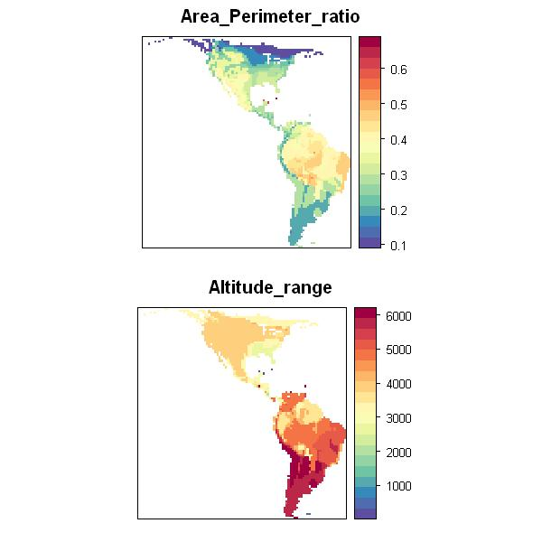

>
Altidude range and the area perimeter ratio of the New World Wrens
RANGE TRAITS EXTRACTION

|
processRanges() takes a metadata argument allowing for the extraction of range parameters (e.g. range extent, range shape etc) and/or the extraction of environmental parameters within the range (e.g. median temperature). The metadata argument accepts a named list of functions. rangeTraits is a convenience function for building up such a list. |
#Start a new project
require(rangeMapper)
dbcon = rangeMap.start(file = "wrens.sqlite",dir = tempdir() , overwrite = TRUE)
f = system.file(package = "rangeMapper", "extdata", "wrens", "vector_combined")
projString = CRS(" +proj=cea +lon_0=0 +lat_ts=30 +x_0=0+y_0=0 +ellps=WGS84 +units=m +no_defs")
global.bbox.save(con = dbcon, bbox = f, p4s = projString)
gridSize.save(dbcon)
canvas.save(dbcon)
-
#Area/Perimeter ratio
APratio = function(x){
# area
A = sapply(slot(x, "polygons"),
function(x) slot(x, "area") )
# perimeter
a = lapply(slot(x, "polygons"),
function(x) slot(x, "Polygons") )
b = do.call(c, a)
a1 = lapply(b, function(x)
Line(coordinates(x)))
L = sapply(a1, LineLength)
# A-P ratio
2*(sqrt(pi*sum(A)))/sum(L)
}
-
# Altitude range
dem = readGDAL(system.file(package = "rangeMapper", "extdata", "etopo1", "etopo1_Americas.tif"), silent = TRUE) # etopo1_Americas.tif data source: readChar(system.file(package = "rangeMapper", "extdata", "etopo1", "data_source.txt"), 500)
[1] "Amante, C. and B. W. Eakins, ETOPO1 1 Arc-Minute Global Relief Model: Procedures, Data Sources and Analysis, National Geophysical Data Center, NESDIS, NOAA, U.S. Department of Commerce, Boulder, CO, August 2008. http://www.ngdc.noaa.gov/mgg/global/relief/ETOPO1/docs/ETOPO1.pdf\nImagery of ETOPO1 Ice Surface by J. Varner and E. Lim, Cooperative Institute for Research in Environmental Sciences, at University of Colorado at Boulder and NOAA National Geophysical Data Center."
AltitRange = function(x) {
sel = which(!is.na(overlay(dem, x)))
if(length(sel) > 0 ) {
demx = dem[sel, ]
res = diff(range(demx@data$band1, na.rm = TRUE))
} else res = NA
res
}
# Process ranges r = readOGR(f, "wrens", verbose = FALSE) processRanges(spdf = r, con = dbcon, ID = "sci_name", metadata = rangeTraits(APratio=APratio, AltitRange=AltitRange) )
# Mapping metadata_ranges table
# Convert metadata_ranges to a BIO table
metadata2bio(dbcon)
rangeMap.save(dbcon, biotab = "metadata_ranges", FUN = "median", biotrait = "APratio",
tableName = "Area_Perimeter_ratio")
rangeMap.save(dbcon, biotab = "metadata_ranges", FUN = "median", biotrait = "AltitRange",
tableName = "Altitude_range")
# Fetch and plot maps m = rangeMap.fetch(dbcon) plot(m)

[1] "R version 2.14.0 (2011-10-31)" [1] "rangeMapper 0.0-6.6" [1] "website generated using ascii 2.1"